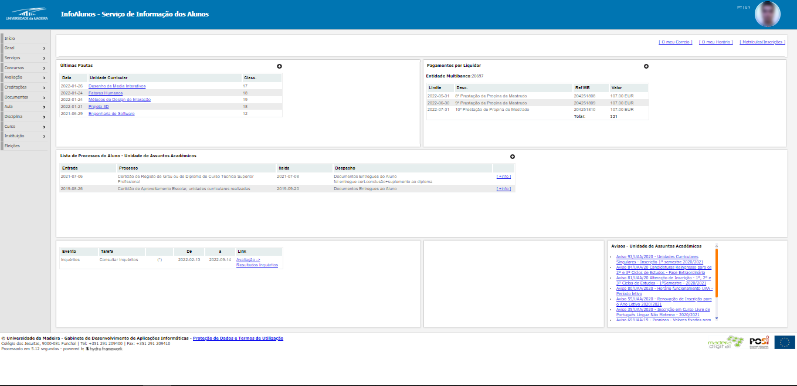
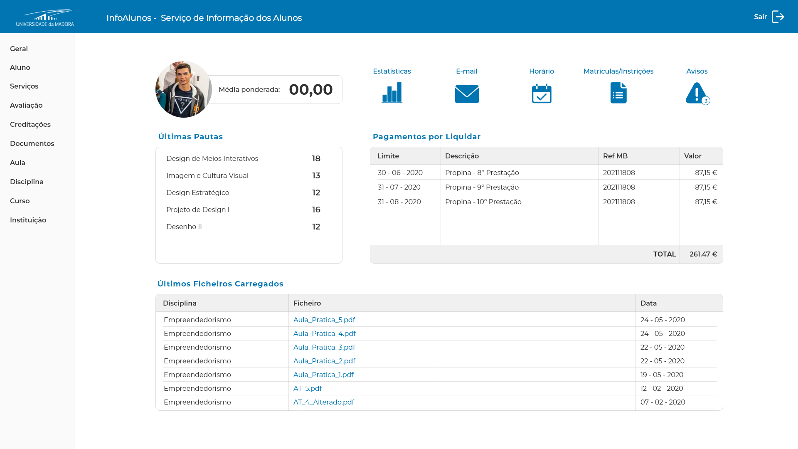
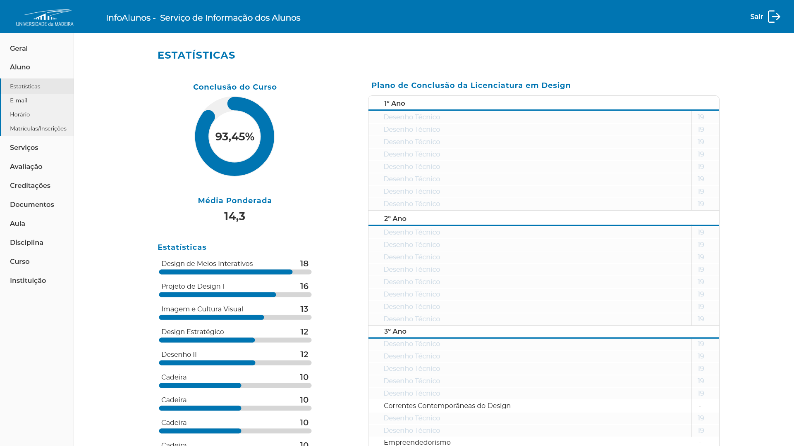

UMa Infoalunos redesign

- Category: Web Design
- Team Size: 1
- Year: 2020
This project was about the redesign of InfoAlunos, our university's student website. InfoAlunos is the platform used by the students to get access to grades, documents, payments, etc. Sadly, most students find this platform confusing and not very intuitive. It has a pretty simple design, which is fine, but it isn't particularly interesting, so I decided to redesign it. Ideally we'd have to rework the way content is organized too but for this project I chose to redesign the UI/UX for the landing page and the statistics under the student profile tab.
The current interface
Below you can see a picture of the student's landing page, it doesn't look bad at first as it's a simple interface with a few tables, which works but doesn't look very pretty. The text is very small everywhere and the site it the exact same on mobile, making it incredibly hard to read and navigate.

The current landing page.
UI/UX redesign
The first problem I found with the website is the fact that what you expect to see on your profile isn't at all what is displayed. Having talked to other students, we thought about what things we considered important to be on the landing page, and those were: our latest grades, latest files uploaded by the teachers and payments remaining. Having those added or kept on the landing page, I decided to add 5 buttons for the most commonly accessed pages by the students: The statistics, student's e-mail, schedule, enrollment and warnings/notifications. All the tables have a more modern design, text is bigger and has more space to breathe, and it overall makes a better use of the grid than the current site.

An example of two pages - the landing page and the student statistics - redesigned.
In regards to the statistics page, I figured we could make use of progress bars as it's an easy and fast way to see how you're doing. It improves user engagement and motivates you to fill the bars and achieve your goals. On the left, I introduced a circular progress bar that represents how close you are to completing your bachelor, and your average underneath. Under this circle I added your grades in each subject, from highest to lowest, with bars that show where you stand from 0 to 20 (this is how we get graded). On the right we would have full course with all subjects, with the ones you have completed grayed out.

An example of two pages - the landing page and the student statistics - redesigned.